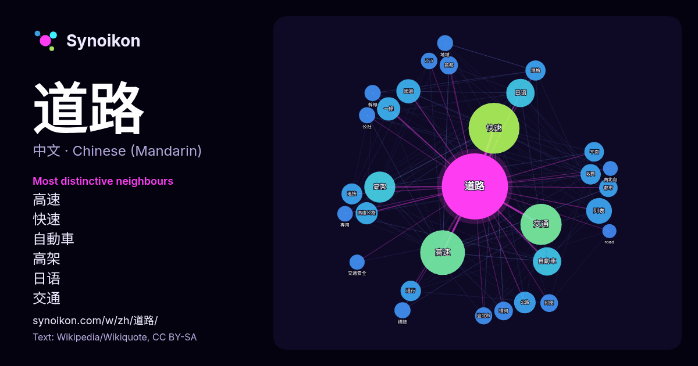

中文 · 每日一词列表
道路
“road” · 来自维基百科, Wikiquote 2223 次出现中其周围的词。

最具特色的邻近词
- 高速 98×
- 快速 96×
- 自動車 67×
- 高架 65×
- 日语 63×
- 交通 50×
- 國道 46×
- 列表 41×
- 高速公路 33×
- 規格 33×
- 環河 32×
- 一條 31×
- 收費 31×
- 通行 29×
- どう 26×
- 封閉 25×
- 連接 24×
- 平面 24×
- 臺北市 23×
- 幹線 23×
× = 比维基百科普通文本中多出的倍数。
最常见的邻近词
- 快速 248
- 高速 192
- 交通 163
- 主要 105
- 高架 92
- 日语 77
- 自動車 77
- 列表 64
- 國道 56
- 一條 52
- 香港 51
- 管理 50
- 日本 49
- 高速公路 47
- 公路 45
- 公里 44
- 主义 42
- 連接 42
- 地方 41
- 部分 41
上下文
- 道路是供各种无轨车辆和行人通行的基础设施；按其使用特点分为市政道路、公路、乡村道路等，古代中国还有驿道。 从距離上说，连结两地的最理想方式是直线。但在实际情况中不得不考虑到道路的路径、道路网等级、以及实际地势地貌，城市原有布局的影响。此外，道路的设计主要要考虑到道路 Wikipedia snippets · 道路
- 臺北市道路列表除列出臺北市境內道路外，並說明道路命名、分段等原則。 臺北市政府為了符合國際化與使外籍人士易於辨認，在不影響原有道路名稱功能下於2000年依道路南北、東西走向依序加掛英文序號附牌，並標示方向與幹道。除臺北外，僅有臺南市有類似編號系統。 臺北市東西向主要道路分為10條大道（Boulevard，簡寫Blvd Wikipedia snippets · 臺北市道路列表
- 世界各地的道路通行方向 道路通行方向是世界各国交通规则中的一个重要内容，它规定了车辆在道路上的行驶方位，避免出现混乱和事故。 道路通行方向可分为车辆靠道路左侧行驶和靠道路右侧行驶。由於安全等因素，左行車的駕駛員幾乎都在車輛右側駕駛，稱為右舵、右軚或右駕；而右行車在左側駕駛，稱為左舵、左軚或左駕。34 Wikipedia snippets · 道路通行方向
- 道路，屬於一種封閉式道路（英语：Limited-access road）。其特点是车速快、交通量大、以及有较高的运输经济效益与社会效益。 受限於城市規模或道路線型，在部分國家和地區行經市中心的全分隔式道路，稱為快速道路，不稱呼為高速公路。部份國家不用「高速公路」（英語：motorway Wikipedia snippets · 高速公路
- 快速道路（英語：expressway），又稱快速公路、快速路、限制通行道路（limited-access road），是專供高速度交通工具使用、雙向之間具有分隔帶或安全島的分隔式道路。其進階設計為高速公路，兩者均供機動車輛使用，但快速道路的服務等級較高速公路為低，例如在交通流量較小的路段設有平面路 Wikipedia snippets · 快速道路
- 以下由北至南表列公路主管機關公告與直轄市轄管之快速道路。 新生高架道路 建國南北快速道路 基隆高架道路 環河快速道路（環河南北快速道路） 水源快速道路 市民大道高架道路 環東大道 洲美快速道路 堤頂大道 信義快速道路 新店環河快速道路 新北環河快速道路 中山高架道路 東豐快速道路（興建中） 臺南都會區北外環道路（部分通車，仍在興建中） Wikipedia snippets · 台灣快速道路
- 收費道路是對使用者收取服務費的公共或私人道路，為道路收的模式之一，主要是為了彌補道路的建設與維護經費，等同一種公路的稅收。通常使用於高速公路、特大橋梁隧道等重要性較高的道路設施。 自古以来，收费公路以某种形式存在，对过往的旅行者，旅行车或骑马征收通行费；但随着汽车的兴起，它们的突出地位增加，和许多现代收费站专门收取汽车的费 … Wikipedia snippets · 收費道路
- 香港是全世界上道路交通密度較高的地區之一，其道路網絡覆蓋了全港十八區，使駕駛者能輕易到達目的地。根據地政總署的記錄，已刊憲命名、年代太久遠而沒有刊憲命名的公共街道，再加上沒有刊憲命名的私家街道，香港共有逾四千條街道。根據香港政府路政署2024年第四季度統計，車輛登記數在80萬輛左右，全港道路的長度有2 Wikipedia snippets · 香港道路
更多词
于 2026-10-09 以默认设置预先计算（±5 个词，中等语料）。交互式图可用实时数据刷新。
界面为机器翻译，欢迎指正。